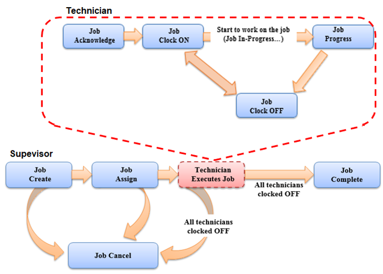

Understanding Job Control
The job control feature focuses on resources instead of lots or containers. It provides the ability to manage resource maintenance and repairs for machines, equipment, or tools. Job Create is designed to embed sustainable maintenance and continuous improvement into your organization by preventing faulty repair or inadequate maintenance.
Other benefits of using job control are to improve efficiencies, provide a place to keep maintenance records, and prevent costly repair work. It also helps to prevent human mistakes, as the predefined maintenance procedure is established via the Job Order and Job Model. This allows technicians to proceed to the assigned task without uncertainty.
The following diagram presents an overview of the job processing flow that is generally handled by maintenance teams, supervisors, and technicians. As reflected in the flow, the job can be created either:
| • | Manually by user, such as the maintenance engineer or supervisor, or |
| • | Automatically by the system based on configured conditions. |
A supervisor assigns the created jobs to one or many technicians. Only assigned technicians can acknowledge and work on the job. As shown in the diagram, the technician proceeds to perform each stage (step) configured for the job. Some of the steps may involve a part request. When the technician completes the last configured step, the job is ready to be updated as completed or closed. The system will not allow closing of a job that has an outstanding part request. Track In will be disallowed if an equipment is associated to an open job.
A job can also be canceled via Job Cancel transaction during various job status except for IN PROGRESS.
The following diagram presents the differences between the Supervisor and Technician tasks. As you can see in the diagram, the Supervisor creates the job, assigns the job to Technicians, and indicates the completion of the job. This process helps the Supervisor to oversee the end-to-end status. The assigned Technicians will start by acknowledging the job, clock on to indicate the start of the work, and clock on after the assigned job is finished.

Refer to the following sub-topics for more information on Job Control transactions.
Simple Mode is a check box option available on the Job Model object page and the Job Create transaction page. Jobs configured for Simple Mode are processed differently by the Job Progress transaction. After the first configured stage is completed, the transaction progresses directly to the last configured stage.
For Simple Mode to function as intended, the following must be done:
| • | The last configured step must be configured with Allow Complete selected. |
| • | Either the first or the last step must be configured to require Symptom Code, Cause Code, and Repair Code. |
Each Job has a Job Status attribute that indicates the job’s current point in the Job processing flow. The displayed diagram shows the progressive change in Job Status (in boxes) as a result of the Job Control transactions being executed.

A newly created job starts with the CREATED status, Once it is assigned, the status will automatically change to ASSIGNED. The status changes to ACKNOWLEDGED when the technician has acknowledged but not started the job. The status will be auto-updated to IN PROGRESS if the technician has clocked on (this signifies that he is working on the job). At the end of the shift or when the technician needs to be away for a while, he can optionally clock off from the job, and the job’s status will become ACTIVE.
After attending to the last step in the assigned job, the technician must clock off. Usually, the maintenance supervisor or lead will be the one to mark the job as being completed. During the various job statuses, except for IN PROGRESS, the job can be canceled.